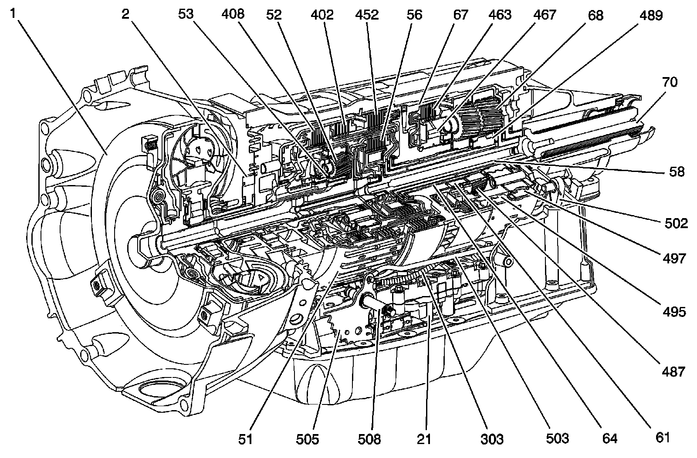

Component Location
Component Location
Component Locations:

1 - Torque Converter Assembly
2 - Torque Converter (with Fluid Pump) Housing Assembly
21 - Control (with Body and Valve) Valve Assembly
51 - 1-2-3-4 and 3-5 Reverse Clutch Assembly
52 - Input Carrier Assembly
53 - Input Sun Gear
56 - 4-5-6 (w/Turbine Shaft) Clutch Assembly
58 - 4-5-6 Clutch (w/Output Carrier Shaft and Dampener) Hub Assembly
61 - 1-2-3-4 Clutch (w/Output Carrier Inner Sun Gear Shaft) Hub Assembly
64 - 2-6 and 3-5 Reverse Clutch (w/Output Carrier Outer Sun Gear Shaft) Hub Assembly
67 - Center (w/2-6 Low and Reverse Clutch) Support Assembly
68 - Output Carrier Assembly
70 - Output Shaft Assembly
303 - A/Trans Input and Output Speed Sensor Assembly
402 - 3-5 Reverse Clutch Plate Assembly
408 - 1-2-3-4 Clutch Plate Assembly
452 - 2-6 Clutch Plate Assembly
463 - Low and Reverse Clutch Plate Assembly
467 - Low Clutch Sprag Assembly
487 - Output Carrier Front Sun Gear
489 - Output Carrier Rear Sun Gear
495 - Output Carrier Internal Front Gear
497 - Output Carrier Internal Rear Gear
502 - Park Pawl
503 - Park Pawl Actuator Assembly
505 - Manual Shaft Detent Lever Assembly
508 - Manual Shift Shaft